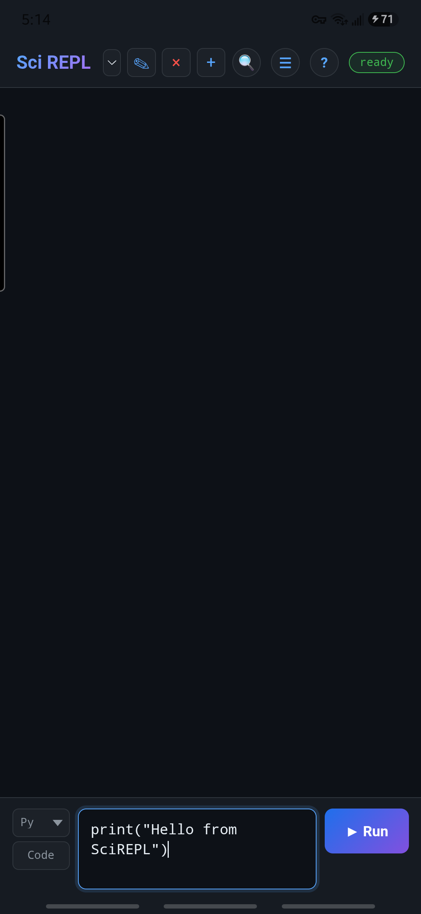
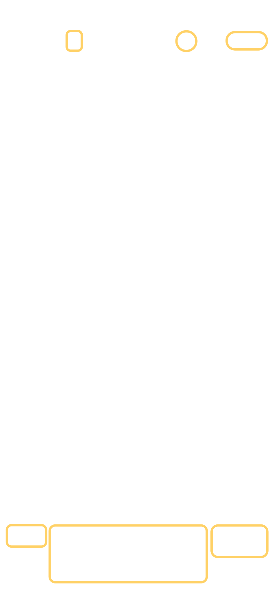
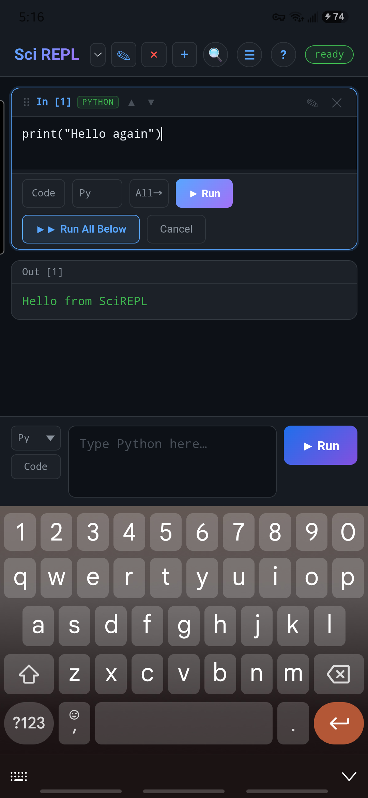
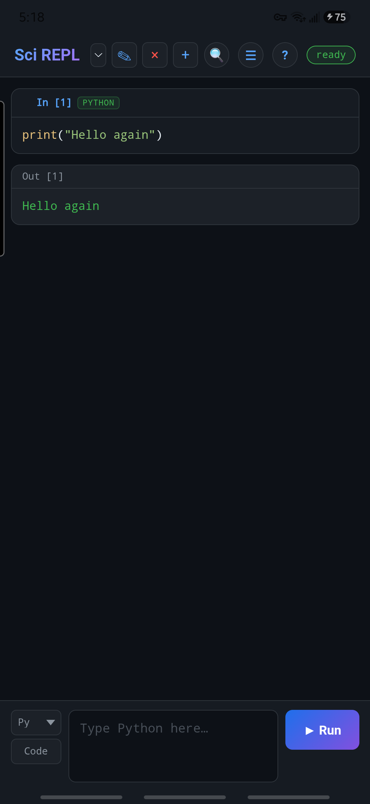
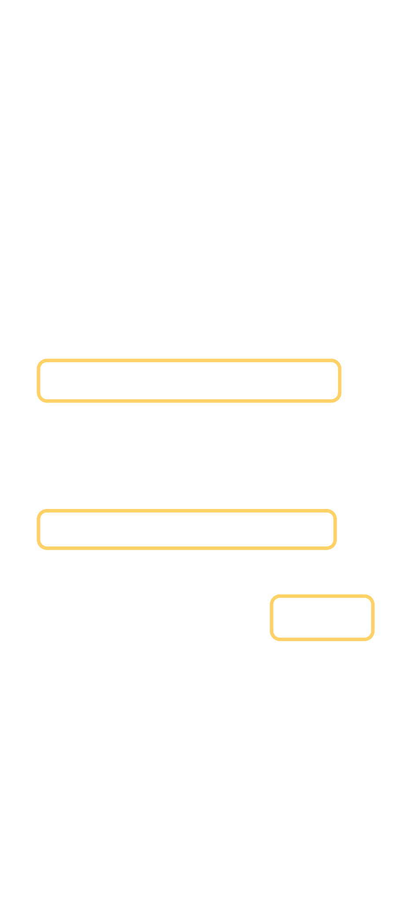

Learn by doing
Make your first workbook
This is the longer, practical companion to the interface reference. You will run one Python cell, change it, and save a copy you control. No AI account or API key is needed.
Screenshots show SciREPL Free v1.3.2 on a Samsung Galaxy S24-series phone. The lesson also applies to Pro, though some controls there may look different.
Step 1
Find your place in the app
The top row is the header. It includes Menu, Help, and a status badge. The workbook selector chooses which workbook is open. Below it is the workbook: saved cells and their results.


The new-cell panel is where you type the next cell. Optional header buttons can disappear when the screen is narrow; their actions remain available from Menu or Help where applicable.
Step 2
Write and run a Python cell
Wait until the status badge says ready before the first run.
- In the new-cell panel, choose Python from the language selector. On a narrow phone, the closed selector may show only Py.
- Type this short program:
print("Hello from SciREPL") - Tap Run. A saved cell appears in the workbook. Beneath it, you should see
Hello from SciREPL.
The first run may take longer. Python's runtime has to start once. Wait for the status to return to ready; later Python cells usually reuse that runtime.
Step 3
Edit the saved cell
- Use the saved cell's Edit control. This is different from typing in the new-cell panel, which creates another cell.
- Change
Hello from SciREPLtoHello again. - Choose Run to save and run the change. You should now see
Hello againbelow that cell.


Hello again.If you open the editor by mistake, use Cancel to leave the saved code unchanged. The language selector inside a saved cell changes that cell; the new-cell selector does not.
Step 4
Export a workbook copy
- Open Menu → Export Workbooks & Packages.
- Choose Current tab only or All tabs, then the SciREPL format Workbook (.srwb) when you want to keep SciREPL-specific state.
- Tap Export and choose a destination you control.



Why export? SciREPL restores local sessions, but local storage is not a backup and is not automatically shared between the Android app and a browser. See files and export for other formats, including .ipynb and PDF.
Step 5
What to try next
Try 2 + 2 in another Python cell. Then use the workbook selector to switch tabs, or browse an example workbook from Menu → Browse Packages, Bundles & Workbooks.
For a quick reminder of where controls live, return to the interface reference. To learn another language or add packages, continue with Languages & packages.